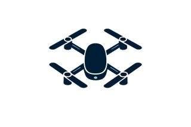

Industria 4.0
Laboratorios y automatización
IoT · Industria 4.0 · Educación tecnológica
Diseño laboratorios, cursos y proyectos aplicados que integran IoT, automatización, fabricación digital e innovación educativa con desafíos reales.
Laboratorios y automatización
Docencia y diseño instruccional
Prototipado y soluciones reales
Proyectos destacados


Sobre mí
Soy Ingeniero Civil Informático y Magíster en Alta Dirección y Gestión de Instituciones Educacionales.
Integro software, IoT con ESP32, automatización, fabricación digital, operación de drones RPA y educación superior para desarrollar experiencias y soluciones orientadas a desafíos reales.
Conocer mi trayectoriaImplementación y actualización de laboratorios donde convergen IoT, automatización, software y fabricación digital.
Docencia universitaria, coordinación académica y diseño de experiencias de aprendizaje aplicadas.
Prototipado, investigación y proyectos tecnológicos con foco en soluciones concretas.
Experiencia destacada
Abril 2022 — presente
Ingeniero en Tecnologías de la Industria 4.0
Liderazgo en la implementación, puesta en marcha y actualización del laboratorio físico y virtual de Industria 4.0 en Santiago.
2022 — presente
Docente
Docencia online en Introducción a la Programación y Reportes de Gestión, con una orientación práctica.
Noviembre 2017 — mayo 2022
Coordinador y docente
Desarrollo de software, soluciones para laboratorios y apoyo a proyectos de innovación académica.
Abril 2022 — octubre 2022
Diseñador de Cursos de Tecnología
Diseño de dos versiones de Introducción a la Programación para modalidad online, con planificación, materiales y documentación académica.
Mayo 2019 — presente
Docente y colaborador en especialidad informática
Docencia en Programación Web, Diseño Web y Programación Front End; estructuración y actualización de contenidos.
2020 — 2021
Evaluador de Proyectos CREA y VALIDA
Gestión y evaluación técnica de proyectos INNOVA CHILE (CORFO).
Tecnologías y competencias
ESP32, Arduino, sensores, LoRa, Ethernet, Bluetooth y automatización.
Python, Flask, JavaScript, PHP, C, HTML, CSS, App Inventor y Kodular.
Impresión 3D, Autodesk Inventor y prototipado electrónico.
Diseño instruccional, recursos de aprendizaje y docencia universitaria.
IA generativa, visión artificial y operación de drones RPA.
Competencias complementarias: Excel, herramientas de productividad y ofimática, soporte técnico y acompañamiento TI.
Evidencia profesional y académica
Formación
Marzo 2018 — diciembre 2020
Marzo 2012 — diciembre 2015
Noviembre 2025 — enero 2026
Noviembre 2024 — diciembre 2025
Certificaciones

Phantom y Mavic · vigente hasta septiembre de 2027

CertiProf · noviembre 2024

CertiProf · enero 2023

CertiProf · septiembre 2021

ITCERT E.I.R.L

CertiProf

ITCERT E.I.R.L
Publicaciones
Coelho, P.A.; Casanello, F.; Leal, N.; Brintrup, K.; Angulo, L.; Sanhueza, I.; Flores, Felipe; Reyes, J.; Forcael, E.
Applied Sciences · 14(21), 9746
Hernández, P.P.; Ahumada, G.N.; Mera Garrido, E.; Zemelman de la Cerda, D.
Fractal and Fractional · 9(10), 639
El artículo agradece a Felipe Igor Flores Valdebenito por su apoyo desde el Laboratorio de Industria 4.0 de la Universidad San Sebastián.
Pacheco Hernández, P.; Mera Garrido, E.; Navarro Ahumada, G.; Wachter Chamblas, J.; Polo Pizan, S.
Atmosphere · 16, 1044
El artículo reconoce el apoyo de Felipe Igor Flores Valdebenito desde el Laboratorio de Industria 4.0 de la Universidad San Sebastián.
Contacto
Estoy disponible para colaborar en proyectos, docencia, investigación y desarrollo tecnológico.
Santiago, Chile